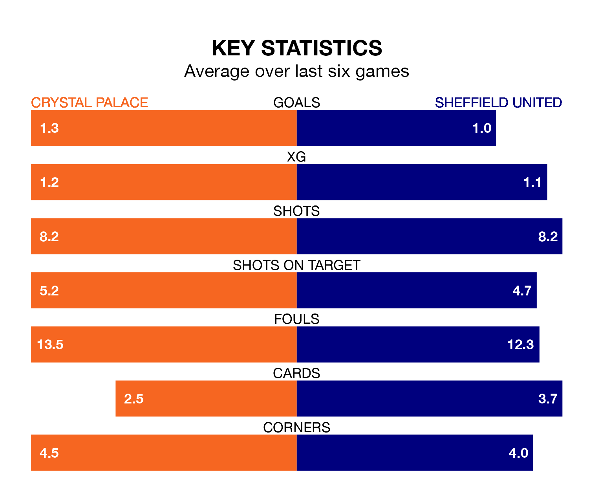

Crystal Palace are heavy favourites to keep all three points at home in Tuesday's late kick-off against Sheffield United.
The Eagles, who sit 16th in the Premier League with 21 games played, are priced at 1.6 to seal victory at Selhurst Park.
Sitting four places and 11 points behind them in the table, United are 6.2 to win with *Betting Company*, while the draw is at 4.5.
Palace are in disappointing form in the Premier League, with one win and two draws from their last six games.
And also with a win and two draws over that period, United's form is identical – they have both taken five points from 18.
In the last five years, Palace and United have played each other on five occasions. Palace won three of them and United two.
On average, the Eagles scored 1.0 goal and the Blades 0.4 in those matches.
Their last meeting was on August 12, when Palace won 1-0 away.
With 17 goals in 21 games so far this season, the Blades are the league's lowest scorers with 0.8 goals per game. And they are conceding more than average, letting in 51 goals at a rate of 2.4 per game.
The Eagles are also below average scorers, with 1.0 goal per game, compared to a league average of 1.6. They have conceded 1.6 goals per game.
Palace's last match was on January 20, a 5-0 loss against Arsenal.
United drew 2-2 with West Ham United last time out, on January 21, with Ben Brereton and Oliver McBurnie on the scoresheet.
Updated: 09:07 (UTC), 24/01/24